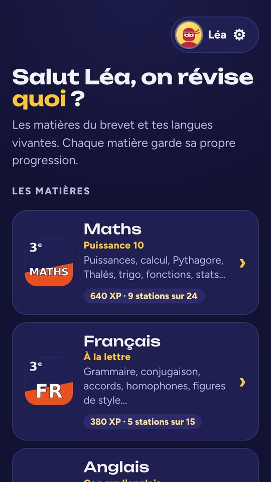
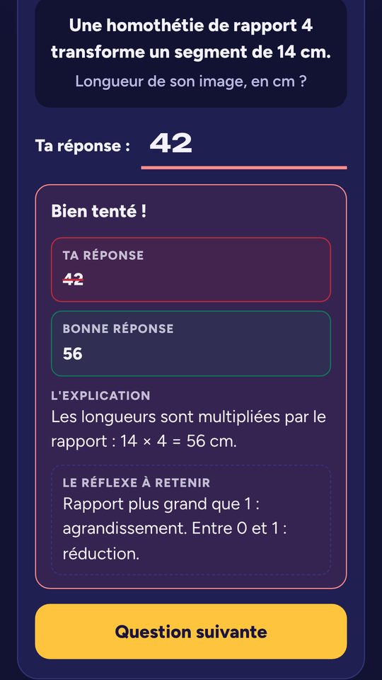
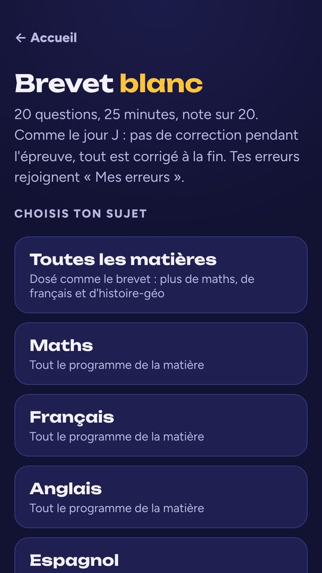

XPert 3e
Révisions brevet · 10 matières
- Maths : puissances, calcul, Pythagore, Thalès, trigonométrie, fonctions, statistiques…
- Français : grammaire, conjugaison, accords, homophones, figures de style…
- Histoire-Géo · EMC : 14-18, dictatures, 39-45, guerre froide, Ve République, territoires…
- Physique-Chimie : atomes, ions, pH, vitesse, forces, énergie, circuits…
- SVT : ADN, évolution, nutrition, système nerveux, immunité, climat…
- Technologie : besoin, cycle de vie, matériaux, réseaux, données, code…
- Langues : anglais, allemand, espagnol, italien (ta LV1 et ta LV2)
En plus : un brevet blanc de 20 questions en 25 minutes, noté sur 20.
Télécharger XPert 3eAndroid 7.0 ou plus récent.


